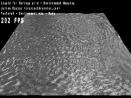

Last stable release: 0.4 (March, 18th 2002)
XGL has been tested on Linux only but it has been reported to work on Windows as well (using VisualC++ 6 on Windows 98).
XGL allows your C/C++ program to load an OpenGL driver, and optionaly a GLU library, at runtime.
It means you do not have to link with any OpenGL library when you build your executable: it will load them when executed.
XGL supports capabilities. Instead of querying a certain OpenGL extension, you ask XGL if a certain feature is present using the XGLCheckCapabilities() call.
Available extensions are automagically loaded upon XGL initialization.
XGL aliases OpenGL extensions' various names. Suppose that XGL reports the "multitexture" to be supported by the loaded driver. You can use the usual OpenGL v1.3 's multitexturing functions such as glActiveTexture() even on OpenGL v1.1. In this case, glActiveTexture is an alias of glActiveTextureARB, which is supported through the ARB_multitexture extension. You don't need to load this extension as it is loaded when XGLInitialize() is called.
Even when using XGL, you are still able to load extensions that are not (yet) supported by XGL using the XGLGetProcAddress() call.
(The following applies to the 0.5 beta only)
XGL includes a transparent state manager which drastically reduces state switches, leading to a mesureable performance increase in your applications.
Never include GL/*.h header files by yourself! Only use the provided xgl.h and make xgl.c inside your C/C++ project.
#include "xgl.h"
...
// driverName has the form "c:\\somepath\\driver.dll" on Windows
// and "/some/path/driver.so" on unix.
GLboolean init = XGLInitialize(driverName, gluName);
if (init==GL_FALSE) {
...error & quit...
}
// Do your OpenGL context setup here. You cannot call
// XGLCheckCapabilities() unless you have a valid context.
...
// Get capabilities
XGLcaps caps;
XGLCheckCapabilities(&caps);
Feature aliasing example: If caps.multitexture's value is GL_TRUE, you can call glActiveTexture() even on OpenGL v1.1 as explained before.
This exemple assume a fictional "Torque" extension exists, and we want to use its glTorquePointer() function.
// You have to declare this at top-level scope
typedef void (__xglapi * glTorquePointer_fptr)(GLenum, GLsizei, GLsizei, GLvoid*);
extern glTorquePointer_fptr glTorquePointer;
// Now you can load the pointer somewhere in your init code:
glTorquePointer = (glTorquePointer_fptr) XGLGetProcAddress("glTorquePointer");
// And later use the function:
glTorquePointer(GL_RIGID_BODY_TORQUE, num_torques, stride, torques);
XGLShutdown();
The new state manager hijacks glEnable(), glDisable(), and glIsEnabled() functions and makes redundant state changes virtually impossible.
Enabling the otherwise disabled state manager using XGLHint():
XGLHint(XGL_STATES_MANAGER_HINT);
The following function can be called in order to make a full update of the state manager's internal table based on current OpenGL states:
XGLSynchronizeStates();
It is intended for self-debugging only as it should be totally useless: the state manager is meant to do this work transparently!
I have done a small demonstration for Linux using XGL: Liquid.
XGL is shipped under the terms of the following license
Copyright (c) 2002, Julien Cayzac <julien.cayzac 'at' gmail.com> All rights reserved. Redistribution and use in source and binary forms, with or without modification, are permitted provided that the following conditions are met: * Redistributions of source code must retain the above copyright notice, this list of conditions and the following disclaimer. * Redistributions in binary form must reproduce the above copyright notice, this list of conditions and the following disclaimer in the documentation and/or other materials provided with the distribution. * Neither the name of XGL nor the names of its contributors may be used to endorse or promote products derived from this software without specific prior written permission. THIS SOFTWARE IS PROVIDED BY THE COPYRIGHT HOLDERS AND CONTRIBUTORS "AS IS" AND ANY EXPRESS OR IMPLIED WARRANTIES, INCLUDING, BUT NOT LIMITED TO, THE IMPLIED WARRANTIES OF MERCHANTABILITY AND FITNESS FOR A PARTICULAR PURPOSE ARE DISCLAIMED. IN NO EVENT SHALL THE COPYRIGHT OWNER OR CONTRIBUTORS BE LIABLE FOR ANY DIRECT, INDIRECT, INCIDENTAL, SPECIAL, EXEMPLARY, OR CONSEQUENTIAL DAMAGES (INCLUDING, BUT NOT LIMITED TO, PROCUREMENT OF SUBSTITUTE GOODS OR SERVICES; LOSS OF USE, DATA, OR PROFITS; OR BUSINESS INTERRUPTION) HOWEVER CAUSED AND ON ANY THEORY OF LIABILITY, WHETHER IN CONTRACT, STRICT LIABILITY, OR TORT (INCLUDING NEGLIGENCE OR OTHERWISE) ARISING IN ANY WAY OUT OF THE USE OF THIS SOFTWARE, EVEN IF ADVISED OF THE POSSIBILITY OF SUCH DAMAGE.
Please use the bug tracker and the open discussion available at Sourceforge.net.
Anyone interested in previous versions of XGL (formerly called WholeGL), if such person actually existed, could find them below.
{kind=link}
{kind=link}